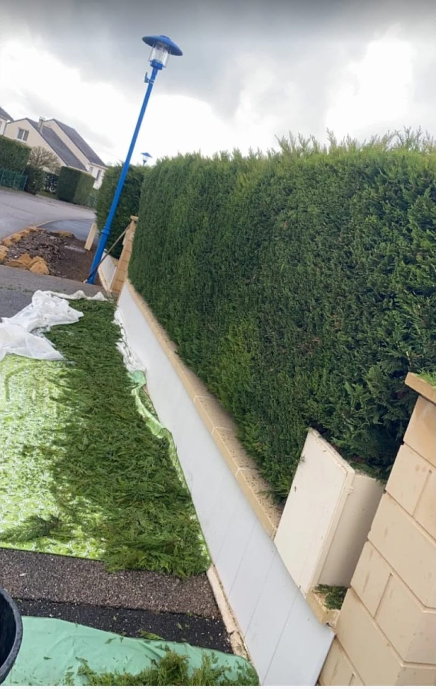

Lignes nettes
Taille de haies
Une haie bien taillée change tout dans un jardin : elle protège des regards sans étouffer l'espace. Nous réalisons des tailles d'entretien régulières comme des remises en forme plus importantes sur des haies laissées à l'abandon.
Faces, dessus, hauteur : nous travaillons au cordeau pour une silhouette homogène, en réglant au passage les problèmes de passage, de lumière ou de voisinage. Thuyas, lauriers, troènes, photinias, charmilles… chaque essence a sa bonne période et sa bonne technique.
Taille des faces & du dessus
Remise en forme / réduction
Haies hautes & longues
Toutes essences
Ramassage des déchets
Évacuation des végétaux
Bon à savoir : Évitez les grosses tailles pendant la période de nidification des oiseaux (printemps - début d'été). Deux tailles légères par an valent mieux qu'une taille sévère.